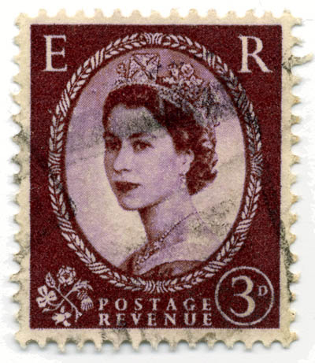

From:
Chanwoo Kim
London SW7 4BG
United Kingdom
Chanwoo Kim
London SW7 4BG
United Kingdom
To:
Seoul
South Korea
Seoul
South Korea
다른 삶을 살았어도
연말 파티
2025.12.31 ─ 연남동 공상온도
한국을 나와 일 년 삼개월 살았습니다. 미국을 거쳐 얼마 전 영국에 조금 더 장기적으로 정착하게 됐습니다.
고국을 잠시 떠나왔지만, 기회가 될 때마다 소중한 사람들과 함께하는 자리는 계속 이어가고 싶었습니다.
우리 모두 살아가면서: 누군가는 사는 나라도 다르고, 직업의 모습도 서로 달라져 가고, 추구하는 바, 사는 형태도 달라지겠지만
아마도 의미 있는 진중한 대화는 여전히 사랑할 사람들과 한곳에 모여 보면 어떨까요?